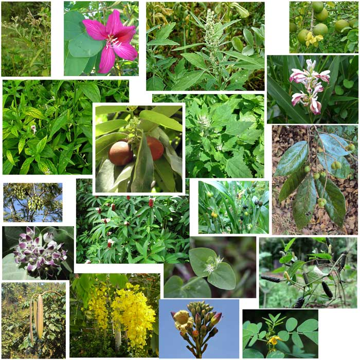

Biodiversity in north east india
Biodiversity of flora [plants]

- North east india has surging himalayas,lush green valleys and ecological diversity, this results in high growth of plants.
- They have average rainfall of 2000mm ie 10%of the whole country.
- Also the 5o% of flowering plants of india grow here.
- Out of 9 rarely found species in india 6 are available in north east india.
Biodiversity of fauna [animals]

- The International Council for Bird Preservation UK has identified the Assam Plains and Eastern Himalayas as an Endemic
Bird Area[EBA]
Himalayas constant climate change leads to home of-
- New bird species
- Two critically endangered bird species
- Three endangered animal species
- 14 vulnerable species of birds
North east india have many national parks which holds rarely found animals and helps in boosting tourism. Here are some examples -
- kaziranga national park is home to two-thirds of the world's great one horned rhinocesores
- Manas National Park is known for its rare and endangered endemic wildlife such as the Assam roofed turtle, golden
langur and pygmy hog.
- There are more famous national parks like Nameri National Park in Assam, Pakhui Wildlife Sanctuary in Arunachal pradesh etc.
There are many endangered animals found in northeast like white tailed deer, red foxes, chikadees, snapping turtles etc.
How is our biodiversity affected